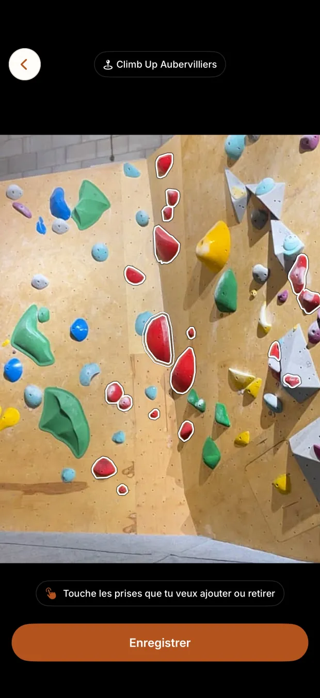
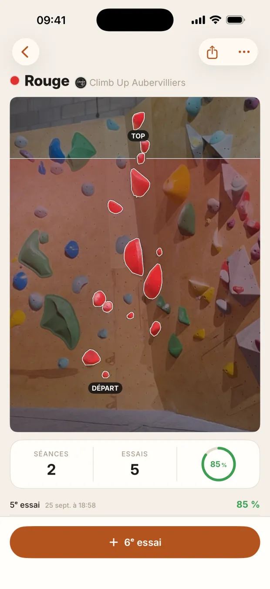
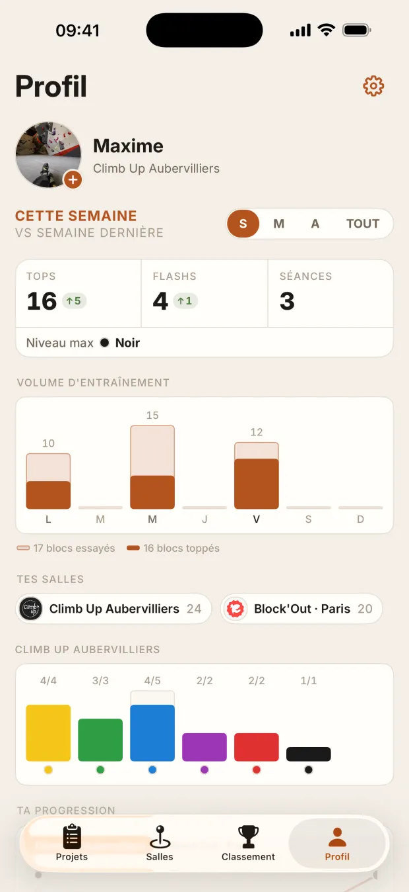
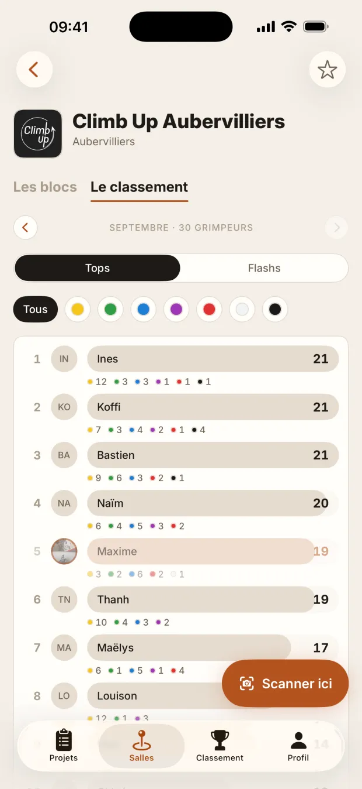

Le guide du créateur
Comment se passe une vidéo, de la séance au virement, ce qu'il faut montrer de l'app, et six formats prêts à tourner quand l'inspiration manque.
De la séance au virement
Tu tournes
Une séance où tu utilises Climbr, dans ton style habituel. Pas besoin de montrer ton visage : les mains au mur et une voix off marchent très bien.
Tu nous l'envoies sur WhatsApp
Avant de publier, envoie-nous la vidéo pour validation. On répond vite. Une vidéo publiée sans validation n'est pas payée.
Tu publies
Sur ton compte, avec la mention « Collaboration commerciale » et @climbr.application dans la légende. La vidéo reste en ligne au moins 90 jours.
Tu nous envoies le lien et l'autorisation pub
Le lien de la vidéo, et le code Spark Ads (TikTok) ou l'autorisation de partenariat (Instagram). On t'explique comment faire sur WhatsApp, ça prend deux minutes.
Tu es payé chaque mois
On t'envoie le relevé de tes vues, puis le virement. Le détail est plus bas, dans Le paiement.
Ce qu'il faut montrer
Climbr est le carnet de bloc de ceux qui grimpent en salle, sur l'App Store et Google Play, avec plus de 1 800 salles. Quatre moments font de l'effet à l'écran.




Le moment le plus fort, c'est le détourage. Tu touches une prise, et toute la voie s'allume. Filme-le en enregistrement d'écran, puis coupe sur le vrai mur : la comparaison fait tout le travail.
Les règles d'or
L'accroche dans les deux premières secondes
Une phrase à l'écran et à l'oral, qui pose une question ou fait une promesse. Si on ne comprend pas tout de suite de quoi parle la vidéo, on passe. Dix accroches plus bas.
Vertical, avec ou sans ton visage
Format 9:16. Le visage et la voix créent la confiance, mais les mains au mur et une voix off marchent aussi.
L'app lisible à l'écran
Utilise l'enregistrement d'écran du téléphone plutôt que de filmer l'écran avec un autre appareil : c'est net, sans reflet. Alterne avec des plans du mur.
15 à 35 secondes, une seule idée
Le détourage, OU la progression, OU le classement. Pas les trois dans la même vidéo.
Des sous-titres
La plupart des vidéos sont regardées sans le son. Les sous-titres automatiques de TikTok et d'Instagram suffisent.
Du vrai
Ton vrai projet, tes vrais essais, tes vrais échecs. Un bloc raté cinq fois puis sorti vaut mieux qu'une démo parfaite.
Une fin qui dit où trouver l'app
« Climbr, sur l'App Store et Google Play », ou « le lien est en bio ». Le lien à mettre en bio : athanor-studio.io/climbr/download, qui envoie chacun vers le bon store.
Six formats prêts à tourner
Scanne ton projet
« POV : ton app détoure ton bloc à ta place. »
- Toi devant le mur, téléphone levé.
- Enregistrement d'écran : la photo, un doigt sur une prise.
- La voie s'allume. Coupe sur le vrai mur.
- Tu grimpes le bloc.
Ma séance en 30 secondes
« Ma séance de bloc, mais chaque essai compte. »
- Un plan court par bloc tenté.
- Après chaque bloc, l'essai noté dans l'app (1 s).
- À la fin, le bilan de la séance à l'écran.
Un mois de progression
« J'ai noté tous mes blocs pendant un mois. Voilà ce que ça donne. »
- Ton Profil le premier jour.
- Quelques plans de séances.
- Le Profil un mois plus tard : les tops, le volume.
Le bloc qui me résiste
« 12 essais sur ce bloc. Le 13e… »
- Le bloc scanné, sa fiche à l'écran.
- Les chutes en montage, le compteur d'essais qui monte.
- Le top, et le bloc qui passe en réussi.
Le classement de ma salle
« Je suis 14e de ma salle ce mois-ci. Objectif : le top 10. »
- Le classement du mois à l'écran.
- Tes séances de la semaine.
- Le nouveau rang. Suite au prochain épisode.
Mes forts et mes faibles
« Mon app m'a dit pourquoi je stagne. »
- Les styles du Profil : dalle, dévers, réglettes…
- Ton point faible, et un bloc de ce style.
- Ce que tu vas travailler.
Dix accroches toutes prêtes
- « Arrête de noter tes blocs dans tes notes. »
- « POV : ton app détoure ton bloc à ta place. »
- « J'ai noté tous mes essais pendant un mois. »
- « Pourquoi tu stagnes en bloc (selon mon app). »
- « Je suis combien dans ma salle ce mois-ci ? »
- « Ce bloc m'a pris 13 essais. »
- « L'app que tous les grimpeurs de ma salle me demandent. »
- « Je scanne le mur, et voilà ce qui se passe. »
- « Ma séance de bloc, notée bloc par bloc. »
- « Tu grimpes en salle ? Il te faut ça. »
Le paiement
- Quelles vues
- Les vues organiques, celles que ta vidéo fait toute seule. Elles sont comptées jusqu'à 30 jours après la publication.
- Et la pub ?
- Une fois qu'une vidéo ne fait presque plus de vues, en général au bout d'une quinzaine de jours, on peut la sponsoriser. Le compteur mélange alors vues organiques et vues payées : on arrête donc de compter la veille, et on te prévient avant, avec le nombre de vues retenu.
- Quand
- Chaque mois, on t'envoie le relevé de tes vues. Tu as 30 jours pour le vérifier, puis on paie par virement sous 15 jours.
- Ce qu'il nous faut
- Ton IBAN, et une facture si tu as un statut d'entreprise. Tu déclares toi-même les sommes reçues.
- Pas payées
- Les vidéos publiées sans validation, et les vues ou abonnés achetés.
Tout ça est écrit dans ton contrat, articles 2 et 3.
À faire, à éviter
À faire
- Signaler la collaboration : c'est la loi (loi influenceurs du 9 juin 2023). Active « Contenu de marque » sur TikTok ou « Partenariat rémunéré » sur Instagram, et écris « Collaboration commerciale » dans la vidéo ou la légende.
- Identifier @climbr.application dans la légende.
- Demander à ta salle si elle accepte qu'on filme.
À éviter
- Filmer d'autres grimpeurs reconnaissables sans leur accord.
- Promettre ce que l'app ne fait pas. Dans le doute, demande-nous.
- Dire que tout est gratuit : l'app se télécharge gratuitement, certaines fonctions sont dans Climbr Pro.
- Acheter des vues ou des abonnés : ces vues ne sont pas payées.
Une question, une idée de vidéo à faire valider ? Écris-nous sur WhatsApp, ou à climbr@athanor-studio.io.